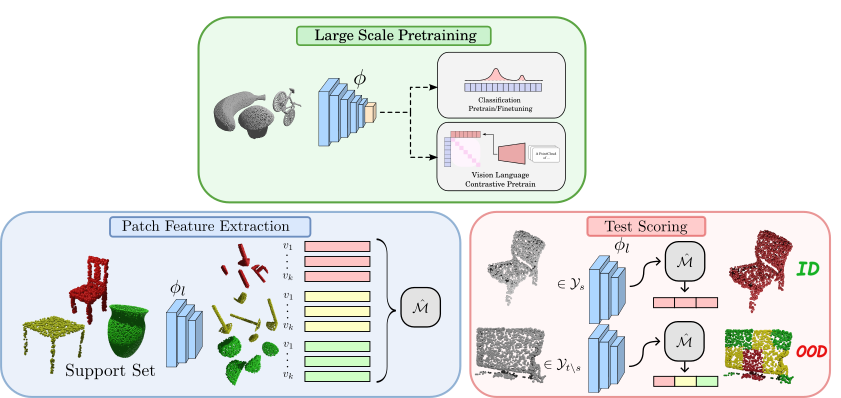

Method

Our method is divided in three phases:
- First we obtain a deep learning model for feature extraction, we have no requirement for training objective or output type as our method is both objective and output agnostic, only that the model has a good internal representation of generic 3D point clouds
- Then we cut off the last layers of the model and extract all the reference patches from the support set data. This step generates a patchyfied representation of our cad reference models that we store in our unified memory bank. Optionally if the memory bank becomes too large we can down-sample it using coreset subsampling
- Finally we can feed our method a test sample, we patchfy again using our feature extractor and compare it with our memory bank, if the extracted features match closely features belonging all from the same class of objects then the object will be classified as ID (In Distribution) otherwise if patches belong to different classes or are far away in feature space they will be classified as OOD (Out of Distribution). Check out the qualitative results for a visual intuition of our scoring function

BibTeX
@ARTICLE{Rabino3dsend,
author={Rabino, Paolo and Alliegro, Antonio and Tommasi, Tatiana},
journal={IEEE Access},
title={3D Semantic Novelty Detection via Large-Scale Pre-Trained Models},
year={2024},
volume={12},
pages={135352-135361}}